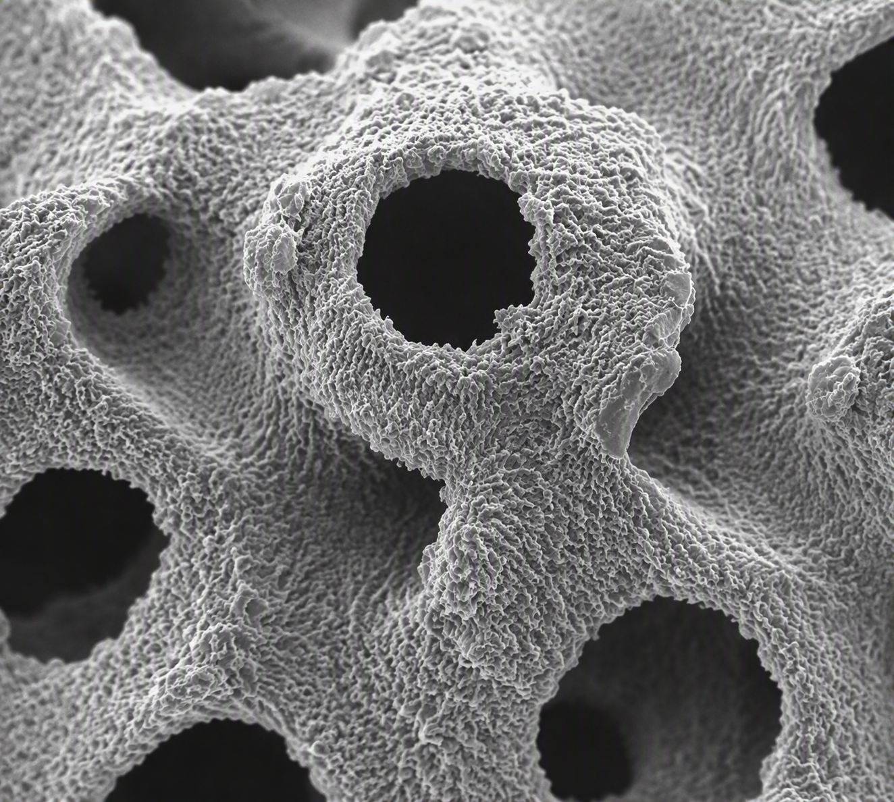
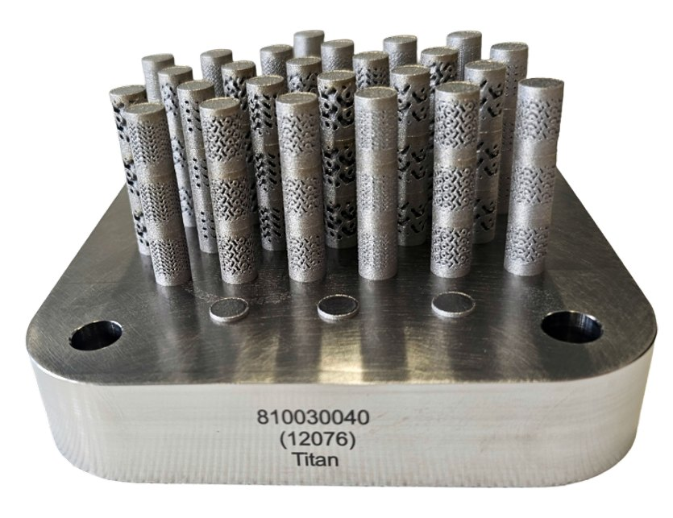

← Travaux / Planche 01
Conception générative et fabrication d'une prothèse à structure osseuse bio-inspirée
Prothèse fémorale bio-inspirée à structures TPMS, combinant conception générative et fabrication additive LPBF en Ti6Al4V.

Fig. — Éprouvettes Ø8 × 14 mmTi6Al4V / LPBF
Fiche technique
Matériau
Ti6Al4V
Procédé
LPBF — fusion laser sur lit de poudre
Application
Prothèse totale de hanche
Module cible
3 GPa
Architectures
Gyroid · Split-P · Diamond
Outils
nTop · ANSYS · Python
Direction
Prof. Haifa Sallem
Objectif
Développer une prothèse fémorale bio-inspirée à structures TPMS (Triply Periodic Minimal Surfaces), combinant conception générative et fabrication additive LPBF, afin de rapprocher son comportement mécanique de celui de l'os naturel. Travail réalisé sous la direction de la Prof. Haifa Sallem, dans le domaine Design & Materials.
Caractérisation expérimentale
La caractérisation d'éprouvettes cylindriques (Ø8 × 14 mm) en Ti6Al4V a permis de constituer une base de données de comportement mécanique pour plusieurs architectures TPMS (Gyroid, Split-P, Diamond), et d'établir les paramètres limites de génération imprimables par LPBF, notamment l'épaisseur de paroi minimale et la taille de cellule admissible.

Conception par simulation
Un balayage du module de Young de la prothèse en simulation par éléments finis montre que la flèche du fémur implanté croise celle du fémur sain à 3 GPa, valeur retenue comme cible de conception. Cette cible a été croisée avec la base de données expérimentale pour ajuster les paramètres de cellules.
Protocole d'essai et résultats
Aucune norme ne couvrant la validation de ce type de prothèse, un protocole d'essai a été dérivé des normes existantes, avec enrobage dans un ciment et chargement quasi-statique cyclique. Les essais montrent une rigidité réelle 16 à 18 fois supérieure aux prédictions numériques, écart attribué à la compliance du montage, aux conditions limites idéalisées et aux défauts d'impression.
Outil développé
Un logiciel automatisant l'ensemble du workflow (génération, simulation, traitement des résultats) a été développé afin de rendre l'étude reproductible.
Résultat
16 à 18 ×
rigidité réelle mesurée 16 à 18 fois supérieure aux prédictions numériques, un écart attribué à la compliance du montage, aux conditions limites idéalisées et aux défauts d'impression. Protocole d'essai dérivé des normes existantes, faute de norme spécifique à ce type de prothèse.